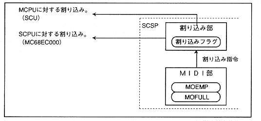

When all the data in the MIDI-OUT buffer is discharged, or when no data is transferred to the MIDI buffer, "MOEMP" becomes "1B", indicating that the buffer is empty The At the same time, it is possible to inform the CPU that it is empty by an interrupt.
Figure 4.61 shows MIDI-OUT and the interrupt generation part.
Figure 4.61 MIDI OUT part and interrupt generation part
